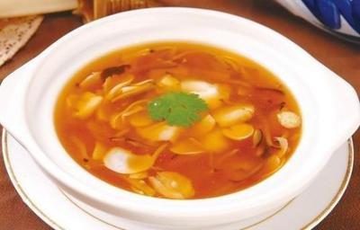

菜品介绍
烩乌鱼蛋汤是山东孔府菜中的传统名菜，以乌鱼蛋为主料烹制而成。乌鱼蛋并非真正的蛋，而是雌性乌贼的缠卵腺，因其形状和颜色似蛋而得名。
此菜汤清味醇，乌鱼蛋片薄如纸，口感滑嫩，酸辣适口，是孔府宴席上的传统名菜，也是鲁菜汤菜中的代表作。
历史背景
烩乌鱼蛋汤源于孔府菜，是曲阜孔府宴席上的传统名菜。孔府菜讲究"食不厌精，脍不厌细"，烩乌鱼蛋汤充分体现了这一特点。
乌鱼蛋在古代是珍贵的海鲜食材，只有富贵人家才能享用。孔府作为世代书香门第，对饮食极为讲究，烩乌鱼蛋汤就是在这样的背景下创制出来的。这道菜后来传入宫廷，成为御膳菜品之一。
制作步骤
1处理乌鱼蛋
将乌鱼蛋洗净，放入锅中加水煮透，捞出剥去外皮，用手撕成薄片，用清水反复漂洗去除咸腥味。
2准备高汤
用老母鸡、火腿、干贝等熬制高汤，过滤后备用。
3烩制
将高汤烧开，放入乌鱼蛋片，加入料酒、盐、白胡椒粉调味。
4勾芡
用淀粉水勾薄芡，使汤汁略微浓稠。
5调味出锅
淋入蛋清形成蛋花，最后加入醋和香油，撒上香菜末即可。

食材清单
主料
- 乌鱼蛋 200克
汤料
- 老母鸡 半只
- 火腿 50克
- 干贝 20克
调味料
- 料酒 2汤匙
- 盐 适量
- 白胡椒粉 1茶匙
- 淀粉 1汤匙
- 鸡蛋清 1个
- 醋 1汤匙
- 香油 1茶匙
- 香菜 适量
营养信息
* 营养信息为每份估算值，实际数值可能因食材和烹饪方式有所不同